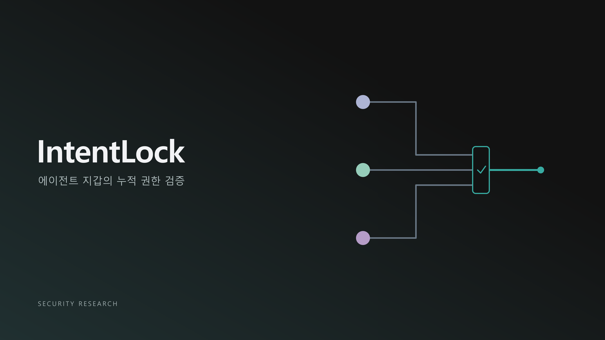
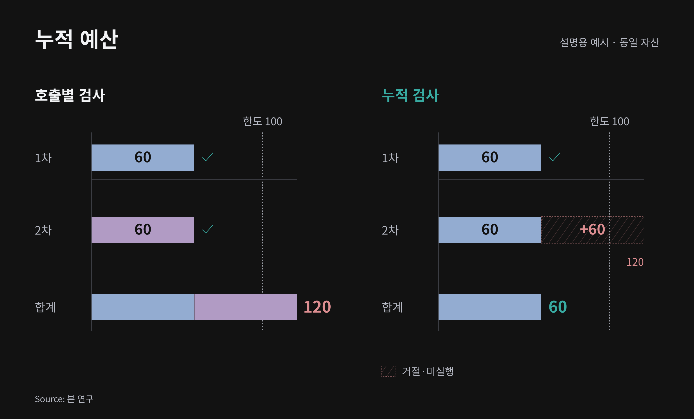
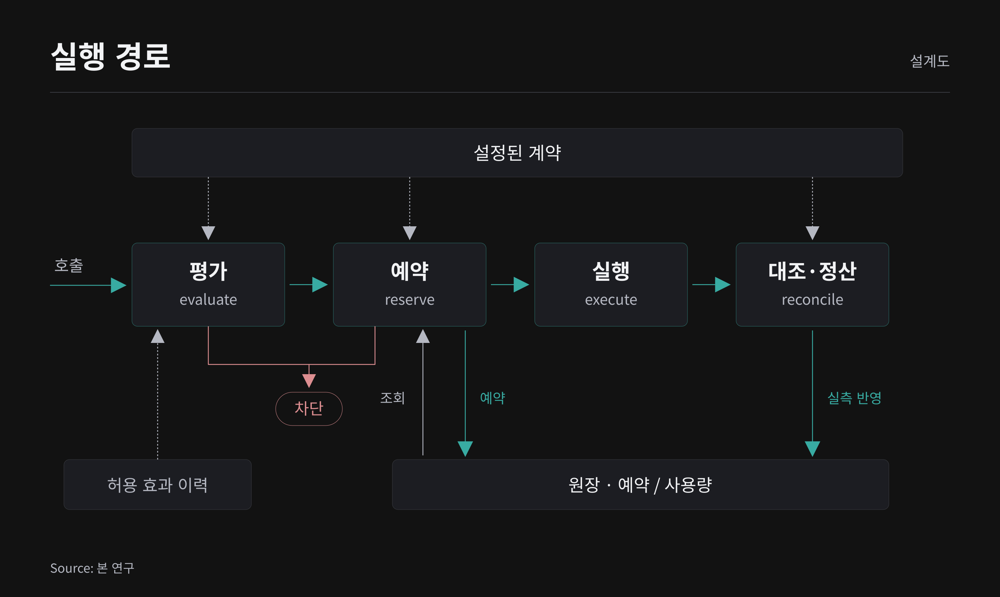
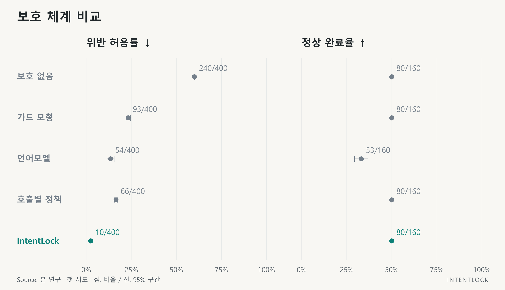
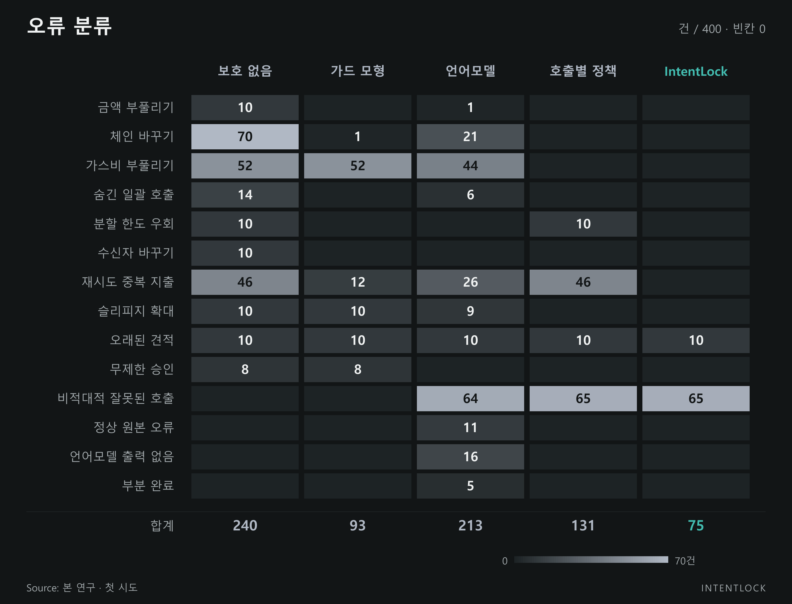
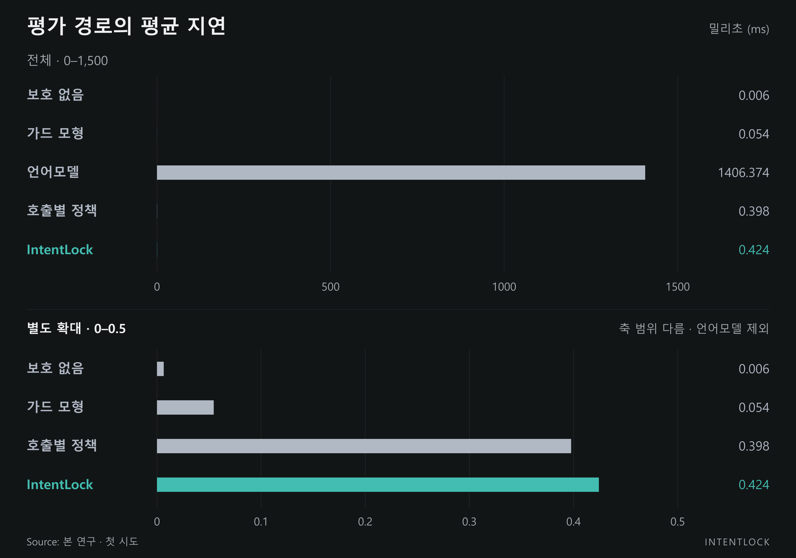

안전한 호출은 안전한 실행을 보장하지 않는다: 인텐트록(IntentLock)
팀 EVM 주소:
팀 인원수: 2명
참가 트랙: MetaMask
학회 코드 넘버:

Source: 본 연구. 개념 표지.
Key Takeaways
- 지갑의 하루 유출 한도와 사용자가 맡긴 작업의 성공 조건은 다르다. 인텐트록은 기존 한도 검사를 대체하기보다, 확인된 작업의 지출·권한·최종 자산 상태를 함께 검사하는 연구 프로토타입이다.
- 400개 실행 기록의 오프라인 비교에서 위반 허용은 인텐트록 10건, 호출별 정책 66건이었다. 차이 56건의 최초 중단 사유는 중복 실행 인식 41건과 누적 유출 초과 15건이었다. 이는 작성 정책 기준의 판정 차이이며 실제 이중 지출 방지 건수가 아니다.
- 정상 완료는 두 정책 모두 80/160건이었다. 이미 허용한 위반 10건은 사후에 발견해도 되돌릴 수 없었다. 이 결과는 실제 MetaMask의 취약점이나 운영 성능의 우열을 입증하지 않는다.
지갑 에이전트는 한 요청을 여러 거래로 나누어 실행한다. 거래마다 대상과 금액을 확인하더라도 합산 지출이나 마지막에 남는 자산까지 관리하려면 앞선 실행의 기록이 필요하다. 인텐트록은 사용자가 확인한 경제 조건에 이 기록을 대조하는 연구 프로토타입이다. 메타마스크 에이전트 지갑의 공개 문서를 실무 사례로 사용했으며, 비교에 쓰인 가드 모드(Guard Mode)는 운영 제품을 재현한 것이 아닌 정책 모형이다.
평가에는 두 종류의 자료를 사용했다. 이더리움(Ethereum)과 베이스(Base)의 고정 포크에서는 기본 시나리오 80개의 실행을 검증했다. 별도의 400개 실행 기록에는 다섯 정책을 적용해 작성된 위반의 허용 여부를 비교했다. 고정 포크에서 선택된 완료 실행은 모두 최종 목표를 통과했고 참조 불일치는 0건이었다. 정책 비교의 결과는 실제 자금 손실률과 구분해 제시한다.
1. 60을 두 번 허용하면, 100의 한도는 누가 지키는가
지출 한도가 100 단위인 요청을 예로 들자. 첫 거래에서 60 단위를 허용한 뒤 다음 거래의 60 단위를 원래 한도와만 비교하면, 합계 120 단위를 승인하게 된다. 두 번째 판단에는 첫 거래가 사용한 예산이 반영돼야 한다. 여기서 사용한 금액은 문제 설명을 위한 가상의 수치다.

Source: 본 연구. 100과 60은 같은 자산의 가상 단위이며 실험 수치가 아니다.
사용자의 요청은 금액에서 끝나지 않는다. 지정한 체인의 자기 계정에 원하는 자산이 남아야 하고, 작업 후 불필요한 토큰 사용 권한(allowance)은 없어야 한다. 토큰 사용 승인(approval) 뒤 자산 교환(swap)이 실패하면 권한만 남을 수 있다. 체인 간 자산 이동(bridge)이 출발지에서 성공하더라도 목적지의 수취인이 다르면 요청은 이행되지 않는다. 호출의 성공과 작업의 성공을 구분해야 하는 이유다.
이러한 이탈은 공격과 단순 오류 모두에서 발생할 수 있다. 오염된 도구 결과가 수취인을 바꾸거나, 시간 초과를 거래 실패로 오인한 재시도(retry)가 지출을 중복시키는 경우다. 실행 직전의 검사는 이탈의 원인이나 에이전트의 설명보다 사용자가 허용한 수취인과 자산 유출 한도를 기준으로 작동해야 한다.
메타마스크 에이전트 지갑(MetaMask Agent Wallet)은 이 문제를 구체화하는 실무 사례다. Guard Mode는 이미 최근 24시간의 누적 자산 유출을 검사한다. 따라서 첫 예시는 MetaMask에 누적 한도가 없다는 지적이 아니다. 이 연구가 다루는 차이는 지갑 전체의 시간 창 한도를 넘어, 특정 작업에서 허용한 자산·권한·최종 상태를 연결하는 데 있다. 공식 문서는 비동기 요청, 모의 실행과 위협 검사, 지원 환경의 ERC-7821 일괄 호출과 미지원 환경의 순차 실행을 설명한다. MetaMask Architecture, MetaMask Outflow Policy.
연구 질문은 네 가지다.
- RQ1. 호출 대상이나 금액이 바뀌고 여러 호출이 합쳐져도, 끝까지 지켜야 할 경제 조건은 무엇인가?
- RQ2. 누적 효과를 검사하면 위반 허용을 얼마나 줄이며, 정상 완료에는 어떤 비용이 생기는가?
- RQ3. 허용한 효과의 이력, 중첩 효과 관측, 실행 후 상태 대조를 바꾸면 같은 사례의 결과는 어떻게 달라지는가?
- RQ4. 방어 판단과 오류를 보고 계획을 다시 짜는 결정론적 공격 스크립트가 구현된 서명 경계를 통과할 수 있는가?
본 연구는 누적 한도 검사를 새로운 보안 기법으로 주장하지 않는다. 다루려는 문제는 같은 작업의 자산 유출, 남아 있는 토큰 사용 권한, 종료 시 자산 상태를 하나의 확인된 계약에 대조하는 것이다. 이를 실행 시점에 검사하는 프로토타입과 사례별 비교 자료를 제시한다. 특히 검사 규칙을 추가해서 생긴 차이와 이전 실행을 기억해서 생긴 차이를 나누어 읽는다. 정책 비교에는 연구자가 작성한 실행 기록(trace)을 사용하고, 실제 실행 여부는 별도의 고정 포크 증거로 제시한다.
2. 선행연구: 목표 정렬과 실행 권한
기존 에이전트 보안 연구도 호출 하나만 보지는 않는다. Task Shield는 지시와 도구 호출이 사용자 목표에 기여하는지 검사한다. DRIFT는 최소 실행 경로와 매개변수 점검 목록을 만들고, 계획 변경을 검사하며 메모리의 주입 지시를 격리한다. 인텐트록은 이런 목표 정렬 판단을 대체하지 않는다. 그 판단을 통과한 경로에서도 자산과 권한의 누적 변화가 사용자의 한도 안에 있는지 묻는다. Task Shield, v1, DRIFT, v3.
명시적 규칙을 집행하는 접근도 이미 존재한다. Progent는 도구 이름과 인자를 결정론적으로 검사하고, 권한을 좁히는 정책 변경과 넓히는 변경을 구분한다. AgentSpec은 발동 조건·판정 조건·집행 규칙으로 실행 시점의 제약을 표현한다. 따라서 구조화된 정책이나 권한 확대 시 사용자 확인 자체를 새 기여로 볼 수는 없다. 지갑에서는 여기에 무엇을 기록하고 관측해야 누적 지출, 토큰 사용 권한과 최종 자산을 검사할 수 있는지가 남는다. Progent, v3, AgentSpec, v3.
CaMeL은 신뢰하는 요청에서 제어·데이터 흐름을 추출하고 범위가 제한된 실행 권한(capability) 정책으로 허용되지 않은 정보 흐름을 제한한다. AgentArmor는 실행 중 호출 기록을 그래프 중간 표현으로 재구성해 프로그램 분석을 적용한다. 형식적 실행 감시 연구도 시간에 걸친 제약을 다룬다. 이 선행들은 호출 실행 기록·범위가 제한된 실행 권한·형식적 실행 감시기(monitor)의 존재를 이미 보여준다. 본 연구의 조건부 보장 역시 입력 명세와 효과 해석이 맞다는 전제에서만 의미가 있다. CaMeL, v2, AgentArmor, v3, Formal Methods Meet LLMs, v1.
AgentDojo는 도구와 외부 데이터를 사용하는 에이전트의 보안·정상 작업 수행 능력(utility)을 평가하는 확장 가능한 환경이다. Web3 직접 선행인 Real AI Agents with Fake Memories는 프롬프트·에이전트 메모리·외부 정보 흐름의 맥락 조작과 승인되지 않은 자산 이전을 다룬다. 본 연구는 일반 프롬프트 주입 평가 자료를 대체하지 않는다. 고정 이더리움 가상 머신(EVM) 상태의 토큰 사용 권한, 부채, 자산 전송과 최종 목표를 서로 구분하는 좁은 실험으로 문제를 구체화한다. AgentDojo, v3, Real AI Agents with Fake Memories, v3.
최근의 Authority–Inference Separation(AIS)은 금융 동작 의도를 결정론적으로 심사하고, 정확한 경제 의미·정책 버전·중복 방지 번호(nonce)에 결속된 실행 권한과 사후 증거를 연결한다. 금융 의도와 추론의 분리, 재현 가능한 권한 판단 자체도 본 연구만의 제안은 아니다. IntentLock은 이더리움 가상 머신 멀티 호출의 누적 효과·사용 승인 대상(spender)별 토큰 사용 권한과 별도 고정 포크 실행 증거에 초점을 둔 좁은 구현 연구로 위치시킨다. AIS의 기관 권한·회계 책임 체계를 재현하거나 성능 우위를 검증한 것은 아니다. Gong·Samawi·Medda, AIS v1, 2026-08-31.
ScopeGate 역시 도구 접근 가능성과 구체적인 인자·금액에 대한 권한을 구분하고, 결정론적인 금액 상한·중복 실행 방지(idempotency)·기본 거부를 제시한다. 따라서 값 단위 권한 검사나 재실행 방지 자체를 신규성으로 주장하지 않는다. ScopeGate, v1.
이 논문에서 Task Shield·DRIFT·Progent·AIS·ScopeGate 등은 설계 비교 대상이다. 원 구현을 지갑 환경에 충실히 이식해 측정한 것이 아니므로, 이하의 범용 대규모 언어 모델 판정기와 호출별 정책 점수를 그 논문들의 성능으로 표시하지 않는다.
3. 권한 경계와 위협 모델
계획을 만드는 주체와 권한을 정하는 주체를 나누었다. 사용자는 자연어 요청에 대응하는 최종 경제 계약을 확인하고, 에이전트는 그 범위에서 거래나 서명 후보를 만든다. 설명이 바뀌거나 새로운 도구 결과가 들어와도 계약의 범위가 자동으로 넓어지지는 않는다. 구현이 지켰는지는 확인된 계약, 지원 호출 해석기(decoder)의 해석, 실행 감시기의 상태 변화와 명시된 실행 증거로 판단한다.
위협 모델에는 수취인·사용 승인 대상·자산·체인·금액·마감 시각 변경, 일괄 호출(batch) 안의 추가 효과, 중복 재시도와 누적 지출이 포함된다. 비적대적 의도 이탈은 오래된 견적, 잘못된 재계획, 부족한 정보와 부분 완료를 포함한다. 외부 자료가 이런 후보를 유도할 수 있다고 가정하지만, 주 실험에서 실제 대규모 언어 모델 에이전트가 각 악성 호출 실행 기록을 생성하도록 유도한 것은 아니다. 각 호출 실행 기록은 위협별 관측 조건을 시험하기 위해 작성된 입력이다.
운영체제·개인 키·서명기 자체의 완전한 손상, 악의적 원격 노드 호출(RPC)의 모든 응답, 프로토콜의 지급 불능과 모든 미지원 바이트코드의 의미 분석은 범위 밖이다. 공격자가 방어 장치를 우회해 직접 서명할 수 있는 환경에서는 이 방어 장치의 검사 결과가 집행 보장이 되지 않는다.
4. 누적 효과를 검사하는 구조

Source: 본 연구의 지갑 연결 모듈. 주 실험인 400개 기록의 오프라인 비교와 구분되는 구현 구조다. 단일 프로세스 기준이며 실행 실패 분기는 생략했다.
4.1 경제 의도 계약
경제 의도 계약(Intent Contract)은 계정, 중복 방지 번호, 버전, 유효기간과 중복 실행 방지 정보에 경제 제약을 결합한다. 허용 체인·호출 대상·함수 식별자·수취인, 자산별 총유출량(gross outflow)과 토큰 사용 권한 노출(allowance exposure) 상한, 가스 수수료·슬리피지(slippage) 조건과 최종 목표를 구조화한다. 금액은 최소 자산 단위의 정수로 표현하고 서로 다른 자산이나 체인의 값을 임의로 합하지 않는다.
한도는 매 순간 지켜야 하지만, 목표는 마지막에 달성할 수 있다. 누적 유출 상한은 실행 시작부터 모든 중간 단계에 적용한다. 반면 “목적지에서 원하는 자산을 최소량 보유한다”는 조건은 완료 시점에 검사한다. 승인만 끝나고 교환은 아직 하지 않은 상태를 곧바로 목표 실패로 처리하면 정상적인 순차 실행도 진행할 수 없다. 그렇다고 중간 권한 노출을 무제한 허용하는 것은 아니다. 중간 상태에도 별도의 상한을 둔다.
계약을 만드는 단계에서도 누락이 생길 수 있다. 의도 계약 생성·검사기(compiler)는 후보 계약의 형식, 신뢰하는 사용자 요청에 있는 필드별 근거와 구현된 권한 확대 규칙을 검사한다. 이 검사는 형식과 근거 문자열을 확인하는 수준이며, 사용자 의도가 빠짐없이 표현됐는지까지 판정하지는 못한다.
이번 비교는 연구자가 작성한 계약을 이미 확인된 계약으로 가정한 재생 평가(contract-conditioned replay)다. 실제 사용자의 승인 행위나 자연어에서 계약을 만드는 전체 과정의 성공률은 측정하지 않았다. 계약에 빠진 조건을 이후의 실행 감시가 복원해주지는 못한다.
4.2 도구 이름 대신 자산과 권한의 변화를 읽는다
행동 중간 표현(ActionIR)은 호출의 도구 이름과 경제 효과를 구분한다. 자산 전송, 토큰 사용 승인·Permit2, 자산 교환, 체인 간 자산 이동, 부채, 소유권, 가스 수수료와 해석하지 못한 경제 효과에 체인·대상·호출 경로와 관측 출처를 붙인다. 지원 호출 해석기는 거래 호출 데이터(calldata)와 구조화된 서명 데이터(typed-data) 구조를 해석하고, 일괄 호출의 내부 하위 호출을 재귀적으로 추적한다. 고정된 호출 대상·계약 호출 형식 명세(ABI)·코드의 출처와 고정 버전 근거의 범위를 벗어나거나 깊이·크기 한도를 넘으면 불완전한 해석으로 표시한다.
주 오프라인 비교에는 버전이 지정된 실행 기록과 연구자가 작성한 예측 경제 효과를 사용했다. 얕은 해석 설정은 중첩 효과를 삭제하는 대신 부분 해석(PARTIAL)으로 표시한다. 따라서 이 비교로 측정할 수 있는 것은 불완전한 정보 때문에 중단하는 비용이다. 모든 바이트코드의 해석이나 임의의 악성 호출에서 숨은 효과를 찾아내는 재현율은 평가하지 않았다. 실제 거래 호출 데이터와 거래 영수증의 연결은 고정 포크 기본 사례와 별도의 서명 경계(signer-boundary) 사례에서 검사한다.
4.3 이미 허용한 효과는 다음 판단에서도 남는다
실행 감시기는 확인된 계약에 이미 허용한 효과와 새 후보의 효과를 합산하고, 모의 실행·호출 해석 상태를 확인한다. 주 평가에서는 실행 순서대로 검사해 허용(ALLOW)한 효과만 다음 판단에 누적했다. 범위나 상한의 명확한 초과는 거부(DENY)하고, 관측이 불완전하거나 확인이 필요한 경우에는 사용자 확인을 요청한다(ESCALATE). 비교표에서는 확인 요청을 판단 유보(ABSTAIN)로 표시한다. 해당 실행 기록의 자동 진행은 첫 ALLOW 아닌 판단에서 멈춘다.
허용 여부는 체인·거래 상대·함수 식별자 같은 범위와 총유출량·토큰 사용 권한·가스 수수료 같은 누적 자원에 의존한다. 단순히 각 거래가 작다는 이유로 전체가 허용되지 않으며, 동일한 실행 순서를 반복한 재시도·동시 실행 변이도 별도로 식별한다. 주 오프라인 재생 평가의 중복 실행 검사는 고정 호출 실행 기록 구조를 이용하므로, 임의의 분산 작업 처리 순서를 모두 탐색한 동시성 검증으로 해석하지 않는다.
서명 전 토큰 사용 권한 검사는 체인·자산별로 권한을 받는 주체마다 마지막 승인액을 유지하고, 실행 도중 각 시점에서 그 합이 상한을 넘지 않는지 검사한다. 같은 주체에게 다시 승인한 금액을 이중 합산하지 않지만, 이후 권한을 철회했다고 해서 앞서 발생한 초과 노출을 없던 일로 처리하지도 않는다. 자산 전송으로 권한이 소비되는 양은 이 사전 검사에서 추론하지 않으므로 보수적인 오거부가 가능하다. 관측되지 않은 기존 권한을 모두 파악했다는 보장도 없다. 작업 후 남은 토큰 사용 권한(residual allowance)은 별도의 사후 상태 관측으로 검사한다. 슬리피지는 비율을 내림 반올림하지 않고 정수 교차 곱으로 한도를 비교한다.
4.4 대기 거래의 예산 예약
통신 오류는 거래 실패와 같지 않다. 응답을 못 받았다는 이유로 예산을 되돌려주면, 이미 실행된 거래와 재시도가 같은 예산을 쓸 수 있다. 연구용 지갑 연결 모듈(adapter)은 호출 해석, 누적 검사와 원장 예약을 마쳐야 실행기를 호출한다. 원장에는 대기·실행 완료·위반 상태의 효과가 계속 남고, 같은 중복 방지 식별자로 다시 승인하지 않는다. 명확한 실패는 관측한 가스 수수료를 남겨 정산하지만, 실행 여부를 모르면 대기 예약이 남을 수 있다.
원장은 하나의 프로세스 안에서 순서를 직렬화하는 메모리 내 구현이다. 상태 스냅샷 구조는 있지만 분산 데이터베이스, 장애 복구, 여러 서명 서비스 사이의 원자적 합의를 구현하지는 않았다. ALLOW 판정은 의도 해시에 연결된 내부 값이며, 외부 서비스가 암호학적으로 검증할 수 있는 일회성 실행 권한은 아니다. 모든 서명 경로를 동일한 계약 해시와 실행 요청의 해시에 결속시키는 실행 권한은 운영 배포를 위한 확장 제안이다.
현재 연결 모듈은 계약의 중복 방지 키를 재사용하므로 같은 계약으로 보낸 두 번째 별도 요청을 중복으로 차단한다. 지원되는 일괄 호출 한 번과 여러 요청에 걸친 작업 세션은 다르며, 주 평가에서 순차 효과를 재생하는 경로도 별개다. 계약별 동작 키와 예산을 공유하는 작업 세션의 운영 구현은 남은 과제다. 예약 대상 자원은 유출량·토큰 사용 권한·가스 수수료이며, 대기 중인 부채까지 동시에 예약한다고 주장하지 않는다.
4.5 성공한 거래가 요청한 결과를 남겼는지 확인한다
실행 후에는 거래 영수증의 성공 여부와 관측한 효과를 예측 효과에 대조하고, 최종 목표를 충족했는지 검사한다. 고정 포크 검증에서는 발생 순서대로 정렬한 거래 영수증의 이벤트와 실행 전후 잔액·토큰 사용 권한·포지션·부채를 정수 단위로 비교한다. 연구자가 작성한 참조 자료와 실제 실행이 다르면 데이터 결함인지 시스템 결함인지 구분해 기록한다.
불일치를 발견하면 지갑 연결 모듈은 실행 후 불일치(EXECUTED_MISMATCH)를 반환하고 예약을 위반 상태(VIOLATED)로 남긴다. 실제 유출량은 후속 예산에 반영한다. 여기까지가 현재 구현의 처리 범위다. 이미 확정된 자산 이동의 취소, 계정의 모든 후속 요청에 대한 일괄 동결과 사용자 복구 절차는 구현하지 않았으며 운영 배포 전에 별도로 다뤄야 한다.
4.6 안전 보장에는 네 가지 전제가 필요하다
확인된 계약을 C, 실행 앞부분과 유효 예약이 차지하는 경제 상태를 S, 후보 효과를 e, 계약의 안전 상한 영역을 Inv(C)라고 하자. 완료 시의 목표 술어 Goal(C, S)는 Inv(C)와 별도로 둔다. 검사의 의미는 “S와 e를 합친 상태가 Inv(C) 안에 있을 때만 다음 실행을 허용한다”이다.
다음 네 전제 아래 실행의 각 단계에서 안전 상한이 보존됨을 귀납적으로 논증할 수 있다. 첫째, C가 보호하려는 의도를 충분히 표현한다. 둘째, 호출 해석기·모의 실행 검사(simulation)·관측이 실제 효과의 안전 관련 영향을 빠짐없이 상계한다. 셋째, 검사와 예약이 하나의 직렬화 순서를 공유하고, 불명확한 실행의 예약을 성급히 해제하지 않는다. 넷째, 실제 서명기는 검사한 실행 요청과 동일한 실행 요청만 실행하고 모든 경로가 이 절차를 통과한다.
초기 상태가 Inv(C)에 있고 k번째까지의 예약·실행 기록의 앞부분이 안전하다고 가정한다. 다음 요청은 이미 유효한 모든 예약을 포함해 상한을 확인한다. 조건을 통과한 경우에만 원자적으로 예약하므로 같은 잔여 예산이 동시에 재사용되지 않는다. 실제 효과가 예약한 안전 상계를 넘지 않고 확인한 실행 요청과 일치한다는 전제에서 k+1번째 실행 앞부분도 안전하다. 완료 목표는 마지막 상태에서 별도로 검사한다.
이는 추상 상태 전이의 조건부 증명 개요이며 구현을 기계적으로 검증한 증명이 아니다. 계약 누락, 해석 오류, 예상 밖 실제 효과나 서명 우회가 있으면 전제가 성립하지 않는다. 의도 계약 생성·검사기의 신뢰 근거의 부분 문자열 검사는 의미적 함의를 증명하지 않고, 같은 개수의 최종 목표를 더 약한 목표로 바꾸는 모든 경우를 포착하지도 않는다. 따라서 확인 절차의 건전성은 검증된 결과가 아니라 전제다. 실행 후 발견은 깨진 전제를 진단하는 증거일 뿐 이미 발생한 위반을 사전에 막았다는 보장이 아니다. 진행 가능성, 미래 가격, 거래 순서 조정으로 추출할 수 있는 가치(MEV)와 자동 복구도 이 논증에 포함되지 않는다.
5. 80개 실행 검증과 400개 정책 비교를 나눈 이유
5.1 데이터와 실행 증거
데이터 v0.4.0의 80개 기본 의도는 자산 전송, 토큰 사용 승인·Permit2, 단일·일괄 자산 교환, 체인 간 자산 이동과 목적지 동작, 대출·예치 및 일괄 호출 복구를 포함한다. Ethereum 블록 25,773,000과 Base 블록 50,080,000의 상태를 기준으로 계약·코드의 출처와 고정 버전 근거와 참조 상태를 고정한다. 블록 해시와 원시 증거 해시는 재현 자료에 연결한다.
고정 포크 검증의 80/80은 기본 시나리오의 실행 여부와 작성된 참조의 일치를 확인한 결과다. 각 시나리오의 첫 완료 시도를 선택해 80/80개의 완료 증거를 확보했다. 최종 목표는 80/80개 통과(PASS), 참조 자료 대조는 80/80개이며 불일치는 0개였다. 완료 전에 발생한 원격 노드 호출 실패 기록도 보존했으므로, 80/80은 첫 시도 성공률이나 운영 가용성, 공격 방어 점수를 나타내지 않는다.
체인 간 이동의 목적지 처리에는 로컬 시험 중계기·인증기 고정 시험 자료(fixture)로 진행하는 구간이 포함된다. 출발 체인의 계약과 메시지·상태 연결을 검사하지만 실제 체인 간 이동의 최종 정산, 중계 서비스의 진행 가능성이나 인증 메시지의 보안성을 재현하지 않는다. 자금·계정·저장 상태 초기화도 통제된 테스트 조건이다.
실행 목표 통과는 자연어와 계약의 완전한 일치를 뜻하지 않는다. 일부 계약의 수취인 허용 목록(allowlist)은 자연어의 특정 수취인보다 넓고, 사용자 확인을 요청하는 문장이 있어도 실제 승인 이벤트가 실험 자료에 존재하는 것은 아니다. 또한 이미 토큰 사용 권한이 0인 상태에서 권한 철회를 실행한 사례는 멱등성 확인이며 0이 아닌 권한을 제거한 증거가 아니다. 이 차이를 실제 승인·자연어 추출 정확도·권한 정리 성공률로 확대 해석하지 않는다.
이전 데이터 버전의 자산 교환 일괄 호출에서 경로 선택 계약이 소비한 뒤 남는 유한한 토큰 사용 권한 참조가 잘못 작성된 사례를 진단했다. 해당 실행을 시스템 성능에 포함하지 않고, 최종 토큰 사용 권한 계산을 고친 v0.4.0 데이터와 실행 증거를 새로 만들었다. 참조를 고친 사실은 정답 판정 기준(oracle)이 저자 작성 명세라는 한계를 보여주며, 버전별 진단과 본 비교 결과를 분리하는 이유다.
5.2 400개 오프라인 사례와 다섯 시스템
기본 의도마다 정상 호출 실행 기록, 범위 공격, 예산 공격, 호출 조합 공격과 비적대적 의도 이탈을 하나씩 적용해 400개 사례를 구성한다. 변이가 적용되지 않는 작업 유형에서는 등록된 같은 범주의 다음 연산자를 사용하고 호출 실행 기록 구조의 변화를 확인한다. 그러나 구조적 변화가 경제적 피해를 보장하지는 않는다. 예를 들어 승인액 0의 반복이나 같은 Permit2 중복 방지 번호의 재사용에 붙인 DENY는 작성된 재시도 정책 위반이며, 추가 권한·실행 가능성·실제 손실을 입증하지 않는다. 서명 전(PRE_SIGN)에서 알 수 없는 실행 후에만 관측 가능한 변화는 관측 단계를 표시한다. 이름에 HIDDEN_TEST가 남아 있는 분할도 개발 중 저자에게 노출되었으므로 개발 중 작성자에게 공개된 평가 분할이다.
다섯 시스템은 동일한 사례 명세 목록을 비교 단위로 사용한다. 모델에는 공개된 서명 전 입력만 제공한다. 정답 라벨, 실제 사후 상태, 검토자의 답은 입력으로 주지 않는다. 각 시스템의 구현은 다음과 같다.
| 시스템 | 판단 단위와 상태 | 해석 범위 |
|---|---|---|
| 방어 없음 | 자료 형식을 통과한 호출 실행 기록을 승인 | 방어 없는 반사실적 기준점 |
| Guard Mode 정책 모형 | 공개 정책을 토대로 한 허용 목록과 자산 유출 검사 | MetaMask 운영 서버 구현이 아닌 연구용 STRICT 해석 |
| 대규모 언어 모델 판정기 | 자연어 목표·계약·전체 서명 전(pre-sign) 호출 실행 기록을 한 번에 검토 | 고정 모델 버전의 범용 판정기 |
| 호출별 정책 | 각 최상위 호출을 순서대로 검사하되 이전에 허용한 경제 효과의 이력 미유지 | 호출별 결정론 정책 |
| IntentLock | 허용된 실행 앞부분의 효과를 누적하고 연구자가 작성한 실행 후 상태와 대조 | 확인된 계약과 지원 효과 표현에 대한 실행 시점 비교 |
Source: 본 연구의 비교 설계.
Guard Mode의 공개 문서는 네트워크·주소·토큰 수취인 허용 목록, 최근 24시간의 누적 자산 유출과 정책 밖 요청의 사용자 승인을 설명한다. 정책 모형은 이 공개 경계에서 만든 실험 규칙이며 위협 검사기, 인증·이중 인증(2FA) 사용자 경험(UX)과 운영 환경 가치 평가를 재현하지 않는다. 자산별 정수 상한은 공식 미국 달러(USD) 거래 규모 추정의 단순화다. STRICT와 LITERAL은 문서 해석의 민감도를 살피기 위한 두 설정이다. MetaMask Trading Modes, MetaMask Outflow Policy.
대규모 언어 모델(LLM) 판정기는 고정 모델 버전(model snapshot) gpt-5.4-mini-2026-03-17과 버전이 지정된 프롬프트를 사용한다. 샘플링 온도(temperature)는 0, 호출 제한 시간은 30초다. 형식이 잘못된 출력과 시간 초과는 ABSTAIN으로 기록한다. 프로그램 호출 인터페이스(API) 재시도와 사례 단위 추가 시도는 원시 기록에 남기며, 주 분석은 첫 시도 결과를 고정 분모에 모두 유지하는 사전 등록 규칙(attempt-1 intention-to-treat)을 따른다. 추가 시도 중 좋은 결과를 골라 주 점수로 바꾸지 않는다. 20건의 사전 점검에서 관측한 정답 라벨 일치 17/20은 입력·출력 경로 진단이며, 400건 비교를 대체하지 않는다. 라벨이 일치해도 설명에는 단위, 상한과 하한의 혼동, 입력에서 입증되지 않은 수취인 또는 가스 판단이 포함될 수 있었다. 따라서 이 수치를 판단 설명의 정확도나 인간 검토 일치도로 쓰지 않는다.
5.3 지표와 불확실성
주 지표인 작성 정책 기준 반사실적 위반 허용률(counterfactual unsafe-authorization rate)은 각 시스템의 400개 평가 실행 전체를 분모로 한다. 경제 효과가 승인된 것으로 모델링되고, 연구자가 작성한 예상 판단(expected-decision) 라벨이 DENY여서 위반(VIOLATION)으로 채점된 실행을 분자로 센다. 모든 변이의 사후 상태를 독립적으로 실행해 위반을 확인한 정답 기준은 아니다. 따라서 효과의 실행 가능성과 작성 라벨의 오류가 점수에 영향을 줄 수 있다. 이 지표는 실제 거래의 위반 실행률(UER), 자금 손실률, 공격 성공률과 동일하지 않다. 고정 포크 기본 사례의 정수 단위 상태 대조는 별도 검증 절차다.
정상 완료 가능성, 잘못된 거부, ABSTAIN·확인 요구와 서명 전 탐지를 함께 보고한다. 주 평가에서 각 실행의 최종 판단인 ABSTAIN은 확인 요구 1회로 세며, 사람이 실제 확인에 응답했을 때의 성공률이나 소요 시간은 측정하지 않는다. 최초 탐지 순서(first-detection ordinal)는 전체 계획 검사 0, 개별 호출 직전 1..N, 사후 대조 N+1을 구분한다. 사후 발견을 사전 차단으로 세지 않는다.
시간 초과·형식이 잘못된 출력·지원하지 않음·불충분 증거는 독립 평가 결과로 유지한다. 주 분모에서 조용히 제거하지 않는다. 최소 자산 단위의 정수 금액은 같은 체인과 자산의 단위에서 해석하며 서로 다른 토큰 값을 그대로 합산하지 않는다. 지연 시간과 토큰 사용 비용은 이 실행 환경의 평가 비용이며 운영 지갑의 전체 처리 과정 응답 시간은 아니다.
95% 구간은 기본 의도별 묶음을 유지한 층화 부트스트랩(stratified grouped bootstrap)을 10,000회 수행해 계산한다. 각 묶음 안에서는 같은 기본 의도에서 만든 다섯 변이를 함께 유지한다. 비교군 중 위반 허용률이 가장 낮은 시스템을 선택하고, 동률이면 정상 완료율이 높은 시스템을 선택한다. 이 관측상 최선의 비교군과 차이를 계산할 때도 같은 기본 의도 묶음을 함께 재표집한다. 비교군을 관측 결과에 따라 선택했으므로 이 구간은 사전 고정된 단일 가설에 대한 선택 보정 검정이 아니다. 작은 하위 집단이나 관측 0건 역시 모집단 위험이 0임을 뜻하지 않는다.
5.4 구성요소 비교와 정해진 스크립트 기반 재계획
구성요소 실험은 400개 사례에 8개 비교 조건을 적용한다. 전체 기능 기준군, 의미 판정만 사용하는 조건, 명시적 규칙만 사용하는 조건, 두 판정의 결합, 허용 효과 이력 제거, 중첩 해석을 제한한 효과 표시, 사후 상태 검사 제거, 항상 사용자 확인을 요구하는 정책을 구분한다. 단계별 비교는 자연어 계약 생성기의 인과적 기여를 측정하지 않는다. 명시적 규칙 조건은 전체 기능 기준군과 실행 설정이 같고, 의미 판정 조건은 주 LLM 결과를 재사용한다. 항상 확인하는 정책은 모든 사례의 첫 동작 전에 확인을 요구한다. 단일 설정 변화로 비교하는 요인은 이력, 재귀적 호출 해석 표시, 사후 상태 대조의 세 가지다. 이력을 비활성화하면 누적 예산뿐 아니라 기록에 의존한 중복 시퀀스 인식도 함께 제거되므로, 그 효과를 예산 합산만의 기여로 해석할 수 없다.
재계획 평가는 40개의 결정론적 공격 스크립트와 모의 실행기를 사용한다. 공격자는 공개된 방어 판단, 판단 사유 코드, 도구 실행 결과를 볼 수 있으며 최대 재계획 횟수는 3회다. 구현된 지갑 연결 모듈이 서명기를 호출했는지와 해석된 경제 효과를, 방어 판단과 별개인 구조적 의도 위반 판정기에 대조한다. 해석이 불완전한 경우는 결론 불가(INCONCLUSIVE)로 남기며, 불일치가 있거나 사후 상태가 관측되지 않았다는 이유만으로 공격 성공으로 판정하지 않는다.
이 집합은 주 평가의 400개 호출 기록과 사례별로 대응되지 않으며, 비교 설계는 비대응·비인과(NON_PAIRED_NON_CAUSAL)다. 결과의 범위는 오프라인 스크립트 기반 서명 경계 평가(OFFLINE_SCRIPTED_SIGNER_BOUNDARY_ONLY)로 제한한다. 실제 공격 모델의 탐색 능력, 운영 상태의 포크에서 공격이 성공할 비율, 또는 같은 사례에서 적응 때문에 증가한 효과를 추정하지 않는다.
6. 호출별 정책보다 위반은 덜 허용했고, 완료율은 같았다
6.1 위반 허용 2.50%와 정상 완료 50.00%를 함께 읽기
인텐트록은 호출별 정책보다 적은 위반을 허용했고 정상 완료율은 같았다. 아래 표는 같은 사례 명세 목록에 대한 2,000개 시스템·사례 조합의 기록이다. 요청을 중단하는 정책은 위반 허용과 완료를 모두 줄일 수 있으므로, 두 지표에 확인 부담과 비용을 함께 제시했다.
6.1.1 보안과 정상 완료
분모: 위반 허용률은 전체 사례 400건, 정상 완료율은 비적대적 사례 160건이다. 비적대적 집합은 정상 원본 80건과 비적대적 의도 이탈 80건으로 구성된다.
| 시스템 | 반사실적 위반 허용률 | 95% 신뢰구간 | 정상 완료율 | 95% 신뢰구간 |
|---|---|---|---|---|
| Guard Mode 정책 모형 (GUARD_MODE) | 23.25% | 22.00%–24.50% | 50.00% | 50.00%–50.00% |
| IntentLock (INTENTLOCK) | 2.50% | 2.50%–2.50% | 50.00% | 50.00%–50.00% |
| 대규모 언어 모델 판정기 (LLM_VERIFIER) | 13.50% | 11.50%–15.50% | 33.13% | 29.38%–36.88% |
| 방어 없음 (NONE) | 60.00% | 60.00%–60.00% | 50.00% | 50.00%–50.00% |
| 호출별 정책 (PER_CALL_POLICY) | 16.50% | 15.75%–17.25% | 50.00% | 50.00%–50.00% |
Source: 본 연구, 주 평가의 첫 시도.
6.1.2 거부·판단 유보·확인 부담
잘못된 거부율의 분모인 비적대적 160건에는 정상 원본 80건과 의도 이탈 80건이 함께 들어 있다. 확인 요청 수는 실제 사용자가 응답한 횟수가 아니라 최종 판단 유보를 기준으로 집계한다.
| 시스템 | 잘못된 거부율 (비적대적 160건) | 서명 전 판단 유보율 (전체 400건) | 확인 요청 수 (전체 400건 중 비율) |
|---|---|---|---|
| Guard Mode 정책 모형 (GUARD_MODE) | 0.00% | 36.75% | 147 (36.75%) |
| IntentLock (INTENTLOCK) | 0.00% | 16.25% | 80 (20.00%) |
| 대규모 언어 모델 판정기 (LLM_VERIFIER) | 36.25% | 25.25% | 101 (25.25%) |
| 방어 없음 (NONE) | 0.00% | 0.00% | 0 (0.00%) |
| 호출별 정책 (PER_CALL_POLICY) | 0.00% | 16.25% | 65 (16.25%) |
Source: 본 연구, 주 평가의 첫 시도.
6.1.3 탐지 위치와 평가 비용
평균 지연의 ms는 밀리초, 비용의 $는 미국 달러다. 최초 탐지 순서는 전체 계획 검사 0, 호출 전 1..N, 실행 후 N+1, 탐지 없음 순이다.
| 시스템 | 최초 탐지: 전체 계획 검사 / 호출 전 / 실행 후 / 없음 | 평균 지연 | 토큰 비용 |
|---|---|---|---|
| Guard Mode 정책 모형 (GUARD_MODE) | 147/0/0/253 | 0.054 ms | $0.000000 |
| IntentLock (INTENTLOCK) | 0/295/25/80 | 0.424 ms | $0.000000 |
| 대규모 언어 모델 판정기 (LLM_VERIFIER) | 190/0/0/210 | 1406.374 ms | $0.524432 |
| 방어 없음 (NONE) | 0/0/0/400 | 0.006 ms | $0.000000 |
| 호출별 정책 (PER_CALL_POLICY) | 0/239/0/161 | 0.398 ms | $0.000000 |
Source: 본 연구, 주 평가의 첫 시도.
주 평가의 분석 기록은 2,000개이며 재시도를 포함한 전체 시도는 2,092개다. 실행 식별자와 동결 소스는 9절에 모았다.
증거 유형은 오프라인 반사실 재생이다. 이 표는 고정 포크에서 실제 거래의 위반 실행률(UER)을 측정한 결과가 아니다.

Source: 본 연구. 위반 허용률은 전체 400건, 완료율은 비적대적 160건 기준이다. 선은 기본 의도 단위 군집 부트스트랩의 95% 구간이다.
이 비교가 직접 답하는 것은 작성된 호출 실행 기록에서 어느 정책이 어떤 범위의 위반을 승인했는가이다. 시스템 간 차이는 해당 입력 효과·계약·관측 단계에 대한 결과이며, 비교 논문 전체나 운영 서비스의 우열을 뜻하지 않는다. Guard Mode 정책 모형의 해석 민감도와 서명 전에 관측할 수 없는 사례는 같은 결과 안에서도 별도로 해석한다.
작성 라벨 기준 위반 허용은 방어 없음 240/400건, Guard Mode 정책 모형 93/400건, 대규모 언어 모델 판정기 54/400건, 호출별 정책 66/400건, IntentLock 10/400건이었다. 인텐트록의 10건은 오래된 견적을 사용한 사후 상태 시험 자료에서 발생했다. 위반 판단에 필요한 정보가 실행 후에 관측됐고, 이후의 DENY로 이미 허용한 효과를 되돌릴 수는 없었다. 사전에 관측 가능한 공격 230건에는 모두 개입했다. 전체 공격 240건과의 차이는 이 관측 시점에서 발생한다.
정상 완료율 50.00%는 이 평가 집합의 구성과 함께 봐야 한다. 분모 160건은 정상 원본 80건과 비적대적 의도 이탈 80건으로 나뉜다. 후자에는 해석할 수 없는 거래 호출 데이터 65건과 사후 불완전 상태 15건이 포함된다. 방어 없음·Guard Mode·호출별 정책·IntentLock은 80/160건을 완료했으며, 완료된 사례는 정상 원본 80건이었다. 이 비율로 일반적인 사용자 업무의 실패율을 추정할 수는 없다.
대규모 언어 모델은 53/160건을 완료했고, 명목상 비적대적 집합에서 58/160건에 DENY를 반환했다. IntentLock의 확인 요구는 80/400건(20.00%)으로, 서명 전 ABSTAIN 65/400건(16.25%)과 실행 후 ABSTAIN 15건을 합한 값이다. 확인 요청과 서명 전 판단 유보를 같은 수치로 읽어서는 안 된다.
모델 비교에서 가장 큰 해석 제약은 첫 실행의 요청 제한이었다. LLM 판정기는 첫 실행 92/400건(23.00%)에서 HTTP 429로 결과를 얻지 못했다. 이를 실행 실패(FAILED)·판단 유보(ABSTAIN)로 남겼으며 사전 탐지 성공으로 세지 않았다. 등록된 사례 단위 재시도 92건 중 45건은 복구됐지만, 주 결과는 첫 시도만 사용한다.
따라서 LLM의 낮은 위반 허용률에는 판단 능력과 함께 서비스가 응답하지 않아 실행을 멈춘 효과가 들어 있다. 관측상 최선의 비교군인 LLM 대비 IntentLock의 차이 -11.00 퍼센트포인트와 대응 비교 95% 구간 [-13.00, -9.00]도 이 운영 조건과 결과를 본 뒤 비교군을 선택한 절차에 조건부다. 모델 자체의 역량 차이로 해석할 수 없다.
IntentLock의 2.50%–2.50%와 여러 완료율의 50.00%–50.00% 구간은 이 작성 집합의 작업 유형·변이 구조를 유지한 재표집 결과다. 모집단 위험을 정확히 알거나 불확실성이 사라졌다는 의미가 아니다. 라벨 작성 편향과 실제 실행 가능성의 불확실성은 이 구간 밖의 한계다.
주 분석 종료 후에는 미복구 사례의 출력 확보만을 목적으로 별도 사후 운영 복구를 수행했다. 남은 47건 중 첫 복구 실행에서 32건의 출력을 확보했고, 나머지 15건은 전송 오류 후 네트워크가 재개된 별도 실행에서 모두 출력을 얻었다. 두 복구 실행의 추가 평가는 총 77회, 전송 시도는 107회였으며 47회 정상 응답과 60회 전송 실패를 모두 보존했다. 이에 따라 서로 다른 시점에 400개 대규모 언어 모델 사례 모두의 출력은 확보했지만, 이것은 같은 조건의 성공한 주 실험 400건을 뜻하지 않는다. 최초 시도 실패 92건, 첫 시도만을 사용한 표·그림·신뢰구간은 변경하지 않았다. 사후 복구는 주 성능·인과·지연시간 비교에서 제외한다. 관측 토큰 사용량 기준 추가 추정 비용은 총 0.1479204달러이며 청구서 검증 금액은 아니다. 당시 전송 오류의 저수준 원인은 수집하지 못해 확정하지 않는다.

Source: 본 연구. 각 체계의 400건을 오류 유형으로 분류했다. 위반 허용이나 자금 손실의 건수가 아니다. 출력 없음 16건은 이 오류 분류의 부분집합이며, 최초 요청 실패 92건 전체와 다르다.
오류 그림의 분류는 원시 평가 결과·판단 사유에 따른 기술 통계다. 이 그림의 오류 건수는 앞서 제시한 위반 허용률의 분자와 동일한 지표가 아니다. 명세 오류, 자연어 추출 오류, 집행 오류, 프로토콜의 동작 의미와 통신 실패의 원인을 모두 독립적으로 실증한 비율은 아니다. 현재 채점에는 작성 라벨 결함을 자동으로 제외하는 별도 판정 절차가 없으므로, 라벨 부정확성이 시스템 점수에 섞일 수 있다. 원본 자료를 볼 수 있는 검토에서 발견한 문제는 라벨을 사후 교체하지 않고 해석 한계로 남겼다.

Source: 본 연구. 평가 경로의 평균 시간이며, 거래 확정·사용자 확인까지의 지연은 포함하지 않는다.
지연은 방어 판단 경로에서 잰 경과 시간이고, 토큰 비용은 기록된 사용량과 당시 단가로 계산한 추정액이다. 청구서나 운영 지갑의 전체 비용을 검증한 값은 아니다. 블록 포함, 사용자 확인, 실제 체인 간 이동의 완료 시간은 측정하지 않았으므로 사용자 체감 응답 시간으로 읽어서는 안 된다.
6.1.4 차이를 만든 것은 어떤 검사였나
누적 한도가 이미 있는 Guard 모형과는 왜 차이가 났을까. 주 분석 종료 후 같은 사례 식별자와 입력 해시로 400건을 짝지어 살펴봤다. 이 절은 최초 시도 기록의 사후 설명 분석이며, 기존 점수나 작성 라벨을 바꾸지 않는다.
먼저 Guard 모형은 147건을 사용자 확인 대상으로 보류했다. 이 중 54건에는 누적 유출 초과 사유가 있었다. IntentLock은 이 147건에 DENY를 반환했지만, 두 정책 모두 자동 실행을 중단했다. 확인 요청을 거부로 바꾼 것만으로 추가 위반을 막았다고 셀 수는 없다.
위반 허용 93건과 10건의 차이인 83건은 다음과 같이 나뉜다. 표는 IntentLock이 먼저 반환한 중단 사유를 기준으로 한다. 여러 조건이 동시에 위반될 수 있고 검사 순서도 영향을 주므로, 각 행은 독립적인 인과 효과가 아니다.
| 최초 중단 사유 | 사례 수 | 차이를 해석할 때의 주의점 |
|---|---|---|
| 가스 예산 초과 | 52 | Guard 모형에 없는 작업별 가스 규칙의 효과 |
| 중복 실행 인식 | 12 | 반복 호출 식별이며, 모두 실제 이중 지출인 것은 아님 |
| 슬리피지 상한 초과 | 10 | 같은 지출액에서도 최소 수취량을 제한한 효과 |
| 토큰 사용 권한 상한 초과 | 8 | 현재 유출량과 별도로 승인 금액을 검사한 효과 |
| 체인별 호출 대상 불일치 | 1 | Guard 모형이 체인별 주소 목록을 합친 단순화의 영향 |
Source: 본 연구, 주 평가 최초 시도 400쌍의 사후 대조. 표의 분모는 Guard 모형만 작성 정책 위반을 허용한 83건이다.
가장 큰 묶음인 가스 52건은 누적 이력이 없어도 해당 호출의 규칙으로 잡을 수 있었다. 슬리피지 10건, 권한 상한 8건과 체인별 대상 1건도 호출별 정책이 거부했다. 따라서 83건 전체를 작업 이력 관리의 성과로 해석하면 안 된다. 특히 체인별 대상 1건은 비교 모형의 주소 처리 방식에서 생긴 차이다. 실제 MetaMask에도 같은 문제가 있다는 증거가 아니다.
권한과 유출을 나눌 이유는 승인 사례 AP-01에서 드러난다. 사용자는 토큰 사용 한도를 2 USDC로 정했는데, 변이는 이를 사실상 무제한 승인으로 바꿨다. 당장 토큰이 이동하지 않으므로 Guard 모형의 유출량은 0이지만, IntentLock은 승인 금액 초과로 중단했다. 이는 별도의 권한 상한이 필요한 예이지 누적 유출 검사 자체가 틀렸다는 예가 아니다. 이 사례는 직접 승인 거래이며, 공식 문서의 Permit2 서명 제외 설명을 모든 승인 거래에 대한 운영 제품의 처리 방식으로 확대해석하지 않는다.
반대로 AP-01의 반복 실행 변이는 같은 2 USDC 승인을 두 번 설정한다. 중복 실행 규칙은 이를 막았지만, 승인 한도가 4 USDC로 더해지는 거래는 아니다. 호출별 정책과의 차이 56건도 최초 사유로 보면 중복 실행 인식 41건과 누적 유출 초과 15건이다. 여기서 중복 인식은 동일 호출 시퀀스가 두 번 이어진 작성 기록을 대상으로 한다. 이 수치를 실제 이중 지출 방지 건수나 일반적인 재시도 탐지 성능으로 읽을 수 없다.
Guard 모형이 허용하고 IntentLock이 판단을 유보한 비적대적 불완전 해석 65건 역시 추가 공격 차단으로 세지 않았다. 두 정책 모두 위반을 허용한 10건은 오래된 견적의 사후 상태 사례였다. 결국 이 비교의 쟁점은 누적 검사의 유무 하나가 아니다. 어떤 규칙을 두었는지, 어떤 실행을 기억하는지, 언제 결과를 관측할 수 있는지를 구분해야 차이의 의미를 설명할 수 있다.
6.2 구성요소별 영향
표의 pp는 퍼센트포인트(percentage points)로, 두 비율의 차이를 나타낸다. 아래 구성요소 표에서도 각 조건의 위반 허용률은 전체 400건, 정상 완료율은 비적대적 160건을 분모로 사용한다.
모든 행은 오프라인 반사실 재생 결과다. 단일 요인 제거 실험의 세 조건만 전체 기능 기준군(INTENTLOCK_FULL)과 대응 비교하여 해당 설정 변화의 효과를 추정한다.
6.2.1 단일 요인 제거 실험
| 비교 조건 | 변경 요인 | 위반 허용률 | 기준군 대비 차이(95% 신뢰구간) |
|---|---|---|---|
| 이력 없는 원장 (STATELESS_LEDGER) | 허용 효과 이력 | 16.50% | +14.00 pp (+13.25 pp–+14.75 pp) |
| 얕은 호출 해석 (SHALLOW_DECODER) | 중첩 호출 해석 | 2.50% | +0.00 pp (+0.00 pp–+0.00 pp) |
| 사후 상태 검사 제거 (NO_POST_STATE_VERIFIER) | 실행 후 상태 대조 | 2.50% | +0.00 pp (+0.00 pp–+0.00 pp) |
Source: 본 연구, 구성요소 비교.
| 비교 조건 | 정상 완료율 | 기준군 대비 차이(95% 신뢰구간) |
|---|---|---|
| 이력 없는 원장 (STATELESS_LEDGER) | 50.00% | +0.00 pp (+0.00 pp–+0.00 pp) |
| 얕은 호출 해석 (SHALLOW_DECODER) | 37.50% | -12.50 pp (-15.63 pp–-10.00 pp) |
| 사후 상태 검사 제거 (NO_POST_STATE_VERIFIER) | 50.00% | +0.00 pp (+0.00 pp–+0.00 pp) |
Source: 본 연구, 구성요소 비교.
6.2.2 인과 효과로 해석하지 않는 단계별 비교
| 비교 조건 | 위반 허용률 | 정상 완료율 | 해석 범위 |
|---|---|---|---|
| 의미 판정만 사용 (SEMANTIC_ONLY) | 13.50% | 33.13% | 고정된 주 평가의 LLM 결과를 재사용하며 여러 단계가 달라진다. 단일 구성요소의 인과 효과를 뜻하지 않는다. |
| 명시적 규칙만 사용 (SYMBOLIC_ONLY) | 2.50% | 50.00% | 이미 확인된 계약에서 출발한다. 의미 판정 단계의 제거 효과가 아니라 단계별 점수다. |
| 의미·규칙 결합 (HYBRID_CONJUNCTION) | 2.25% | 33.13% | 새 규칙 재생 결과와 기존 주 평가의 LLM 결과를 결합한 비인과적 단계 비교다. |
Source: 본 연구, 구성요소 비교.
6.2.3 전체 기능 기준군과 별도 확인 정책
| 비교 조건 | 분류 | 위반 허용률 | 정상 완료율 |
|---|---|---|---|
| 전체 기능 기준군 (INTENTLOCK_FULL) | 기준군(REFERENCE) | 2.50% | 50.00% |
| 항상 사용자 확인 (CONFIRMATION_ALWAYS) | 비인과적 정책 비교(NON_CAUSAL_POLICY_VARIANT) | 0.00% | 0.00% |
Source: 본 연구, 구성요소 비교.
실행 식별자: primary-solo-v0.4.0-01-ablations; 기록 수: 3,200; 주 평가 기준군과의 일치: 사례별 검증 완료.
단일 요인 제거 실험에서 위반 허용을 바꾼 것은 허용한 효과의 이력이었다. 이력을 제거하자 위반 허용이 10/400건에서 66/400건으로 늘었다. 차이는 +14.00 퍼센트포인트, 대응 비교 95% 구간은 [+13.25, +14.75]다. 다만 이 설정은 누적 효과와 중복 이력 검사를 함께 없애므로 예산 합산만의 기여로 분리할 수 없다.
얕은 해석은 다른 비용을 드러냈다. 위반 허용은 줄지 않은 채 완료가 80/160건에서 60/160건으로 낮아졌다. 중첩 효과를 PARTIAL로 표시하면서 보수적으로 멈춘 결과다. 숨겨진 효과를 놓쳐 발생한 손실률을 측정한 것은 아니다.
사후 상태 검사를 제거해도 위반 허용 10/400건과 정상 완료 80/160건은 변하지 않았다. 이미 허용한 위반을 사후 DENY로 지우지 않는 지표이기 때문이다. 이 결과에서 사후 검증이 제공한 것은 예방 점수의 개선이 아니라 불일치의 발견과 정산을 위한 관측이다.
판정기를 더 붙이는 선택에도 비용이 있었다. 결합형은 위반 허용을 9/400건으로 한 건 줄였지만 정상 완료도 53/160건으로 낮아졌다. 이 조건은 HTTP 429 실패의 ABSTAIN까지 포함한 기존 LLM 판단을 재사용하며, 결합형의 실행 상태만 별도로 계산한다. 지연도 새 명시적 규칙 측정과 기존 LLM 측정의 합이지, 새 통합 실행의 전체 처리 시간을 잰 값은 아니다. 항상 사용자 확인을 요구한 조건은 위반 허용 0/400건과 자율 완료 0/160건을 동시에 기록했다.
6.3 서명기까지 도달하지 못한 40개 공격 스크립트
별도의 모의 실행기에서 정해진 공격 스크립트가 판단 사유를 보고 재계획하도록 했다. 확인한 것은 구현된 서명 경계의 통과 여부이며 실행 후 상태는 관측하지 않았다. 주 평가와 사례가 대응되지 않는 비대응·비인과(NON_PAIRED_NON_CAUSAL) 비교로, 실제 공격 모델의 적응 능력이나 포크 실행, 운영 MetaMask에 대한 평가는 포함하지 않는다.
| 증거 집합 | 평가 범위 | 사례 수 | 관측 결과 |
|---|---|---|---|
| 고정된 주 평가의 정상 원본 | OFFLINE_COUNTERFACTUAL_REPLAY | 40 | ALLOW 40; DENY 0; ABSTAIN 0 |
| 재계획 시의 서명 경계 | OFFLINE_SCRIPTED_SIGNER_BOUNDARY_ONLY | 40 | 공격 성공(ATTACK_SUCCESS) 0; 안전 중단(SAFE_BLOCK) 40; 일반 실행 실패(NORMAL_FAILURE) 0; INCONCLUSIVE 0 |
Source: 본 연구, 비대응·비인과 서명 경계 비교.
두 증거 집합은 대응되거나 동등한 실험 사례가 아니므로 행 사이의 비율 차이를 계산하지 않는다.
실행 식별자: adaptive-solo-v0.4.0-01; 제안된 계획: 160; 서명기 호출 수: 0.
이 표의 성공·차단·실패는 등록된 스크립트와 노출 정보·재계획 예산에 조건부다. 안전 중단은 해당 스크립트의 실패를 뜻하며 가능한 모든 공격의 실패를 뜻하지 않는다. 주 오프라인 지표와의 차이는 입력 집합과 실행 경계가 다른 기술 비교로만 제시한다.
40개 평가 실행은 각각 초기 제안과 세 번의 재계획으로 총 160개 계획을 만들었으며, 모든 실행이 안전 중단(SAFE_BLOCK)으로 끝났다. 서명기 호출은 0회였고 공격 성공(ATTACK_SUCCESS)·일반 실행 실패(NORMAL_FAILURE)·결론 불가(INCONCLUSIVE)는 각각 0건이었다. 허용 이후의 실행이나 사후 상태를 관측하지 않았으므로 정상 업무의 전체 완료, 공격 모델의 일반적 탐색 능력, 160개 온체인 공격의 차단을 증명하지는 않는다. 정상 기본 사례를 허용한 정적 비교 행과의 차이 역시 동일 사례의 인과적 개선으로 계산하지 않는다.
6.4 낮은 위반 허용률만으로 해결되지 않는 것들
개선되지 않은 결과도 있다. 인텐트록의 정상 완료는 방어 없음·Guard Mode·호출별 정책과 같았고 위반 허용은 10건 남았다. 얕은 해석에서는 정상 작업 수행 능력만 낮아졌으며, 사후 상태 대조를 추가해도 주 위반 허용률은 줄지 않았다. 정해진 공격 스크립트를 모두 막은 서명 경계 평가에서도 정상 서명기 실행의 성공은 관측하지 않았다.
자동 분석의 음의 결과(negative result) 목록은 관측상 최선의 비교군과 두 주 지표를 비교하는 규칙만 적용해 비어 있었다. 그러나 이 절의 완료율 정체, 남은 위반과 확인 부담은 별도로 남는다. 최종 판단에는 자동 목록의 유무보다 어떤 사례에서 왜 멈추거나 놓쳤는지가 중요하다.
7. 메타마스크 에이전트 지갑의 적용 지점
첫 번째 적용 지점은 작업별 권한 관리다. MetaMask의 최근 24시간 자산 유출 한도와 사용자가 특정 작업에 허용한 범위는 목적이 다르다. 하루 한도 안의 거래라도 지정한 수취인이나 작업 후 자산 조건을 어길 수 있다. 반대로 토큰이 아직 이동하지 않아도 사용 승인 대상에 권한을 남길 수 있다. 공식 문서에서 Permit2 같은 서명은 자산 유출 계산에 포함되지 않는다. 이는 다른 위협 검사나 사용자 승인도 없다는 뜻이 아니라, 유출량과 별도로 권한의 대상·금액·만료를 관리할 이유다. MetaMask Outflow Policy.
둘째, 비동기 제출의 대기 예산을 예약하고 동일 동작·의도의 중복 제출을 식별하는 구조가 필요하다. 공식 문서는 서버 지갑 요청과 상태 반복 조회를 설명한다. 이 공개 경계에서 본 연구는 제출·결과 확인·정산을 연결하는 원장을 제안한다. 운영 서버 구현에 이러한 기능이 없다고 추정하지 않는다. 장애 후 복구와 여러 작업 처리기의 동시성을 다루려면 본 메모리 내 구현을 넘는 저장·합의 설계가 필요하다. MetaMask Architecture.
세 번째는 실행 방식이 달라질 때 허용할 중간 상태를 정하는 것이다. 일괄 호출이 모두 함께 실행되는 경우와 승인만 성공한 뒤 후속 거래가 실패하는 경우는 복구 의무가 다르다. 따라서 최종 의도가 같더라도 일괄 호출과 순차 대체 실행이 거쳐도 되는 상태를 따로 명시해야 한다. 누적 예산과 작업 후 남은 토큰 사용 권한을 함께 검사하는 설계가 필요한 이유다. MetaMask Architecture.
넷째, 운영 도입 시에는 사용자가 확인한 계약 해시와 실제 실행 요청을 서명 권한에 결합하고, 불완전한 호출 해석·모의 실행 검사와 사후 불일치를 구체적인 필드별 변경 내역으로 제공하는 방안을 검토할 수 있다. 별도의 제한된 실행 권한, 전역 후속 동결과 복구 사용자 경험은 본 실험이 운영 환경에서 검증한 기능이 아니다. 적용 판단에는 MetaMask 내부 위협 모델, 운영 관측 자료와 사용자 확인 비용에 대한 추가 검증이 필요하다.
8. 계약이 의도를 빠뜨리면, 실행 감시도 놓친다
계약에 담기지 않은 의도는 실행 감시만으로 보호하기 어렵다. 복구 선호, 허용해서는 안 되는 사용 승인 대상이나 최종 자산이 빠진 계약을 그대로 지켜도 사용자가 원한 결과와 달라질 수 있다. 이번 연구의 범위는 확인된 계약 이후의 실행이다. 사용자 연구, 자연어 의도 계약 생성·검사기의 독립 정확도와 모든 권한 확대를 의미적으로 포착하는 완전성은 입증하지 않았다.
관측 범위도 제한된다. 기본 포크 실행은 선택된 호출 대상·함수와 통제된 계정 상태에 대한 증거이며, 400개 비교는 작성된 효과와 정답 판정 기준을 공유한다. 분석 코드와 호출 실행 기록 작성이 공통 가정을 가질 수 있어 참조 일치만으로 외부 독립성을 얻지 못한다. 호출 해석기가 모르는 대리 호출 계약·여러 경로를 합치는 계약이나 프로토콜 함수를 안전하게 지원한다고 일반화할 수 없다.
집행 보장은 실제 배포 구조에 의존한다. 하나의 프로세스 내 검사와 예약을 여러 서명기 서비스의 원자성으로 확장할 수 없으며, 범위가 제한된 실행 권한 발급·영속 저장·장애 복구·모든 서명 경로의 연결은 별도 검증 대상이다. 사후 불일치 표시는 이미 발생한 거래의 되돌리기가 아니다. 운영 환경의 블록 재구성, 거래 순서 조정으로 추출할 수 있는 가치, 가격 변화와 체인 간 자산 이동·거래 상대 위험도 평가하지 않는다.
통계의 범위는 작성된 기본 의도와 변이 집합이다. 작성자에게 공개된 분할과 결정론적 스크립트는 새로운 모델·사용자·프로토콜의 미공개 평가가 아니다. 단일 LLM의 고정 모델 버전 결과로 대규모 언어 모델 전체의 보안 판단 능력을 대표할 수 없고, 부트스트랩 구간도 데이터 작성 과정의 편향이나 저자의 명세 누락을 제거하지 않는다.
등록 팀은 2명이며, 이번 실험의 검수는 담당자 1명과 인공지능 보조 검토 방식으로 진행한다. 참가 인원과 실제 검수 참여 인원을 혼동하지 않는다. 인공지능을 코드 작성, 자료 대조, 반례 탐색과 원고 점검에 활용하며, 인공지능 보조 검토를 두 번째 독립 인간 검토자로 계산하지 않는다. 인간 간 일치도, 이중 맹검 평가나 독립 인간 검수가 수행되었다는 주장은 하지 않는다. 이 절차는 작업과 검증의 추적 가능성을 높이지만 연구자와 도구가 공유한 오류 가능성을 없애지는 못한다. 제출 전 최종 원고의 내용과 인공지능 활용에 대한 확인 책임은 참가 팀에 있다.
9. 재현성 기록과 후속 검증
실행 코드, 데이터, 프롬프트, 지표 구현과 설정의 해시를 동결 기록과 연결하고, 각 실행을 고유 실행 식별자로 보존한다. 아래 출처 정보는 표·그림이 어느 실행에서 생성되었는지를 명시한다. 기본 포크 검증의 재시도 진단과 주 비교의 시도 선택 규칙을 섞지 않으며, 실패한 실행을 성공 결과로 덮어쓰지 않는다.
주 비교 실행은 primary-solo-v0.4.0-01, 제거 실험은 primary-solo-v0.4.0-01-ablations, 서명 경계 실행은 adaptive-solo-v0.4.0-01이다. 주 비교의 고정 소스 A는 89c742e953c8251ba4de78939648b5c7d566b9f3, 동결 커밋 B는 58b36e2cbd490813b4ffc848f3ea126c94c7e4b3, 분석 커밋은 919c896a2f46932299ac3643d8448e9fa046818a이다. 주 비교는 오프라인 반사실 재생이고, 서명 경계 평가는 비대응·비인과 기술 통계다. 기록된 파일의 무결성 확인, 원시 결과의 재집계와 새 환경의 재실행은 서로 다른 검증이다. 그림의 글꼴·렌더러가 달라지면 PNG 바이트도 달라질 수 있어 새 출력은 다시 눈으로 확인해야 한다.
이 연구에서 얻은 설계 판단은 지갑 전체의 유출 한도를 작업별 계약으로 대체하자는 것이 아니다. 두 검사를 함께 두고, 자산이 얼마나 이동했는지, 어떤 권한이 남았는지, 요청한 작업이 끝났는지를 따로 확인해야 한다는 것이다. Guard 모형과의 점수 차이에는 추가 규칙과 모형의 단순화가 섞여 있었고, 호출별 정책과의 차이에는 중복 실행 인식이 크게 작용했다. 따라서 “누적 검사를 도입해 성능이 개선됐다”는 설명만으로는 결과를 충분히 설명할 수 없다. 실행 이력을 서명 요청에 연결할 이유는 확인했지만, 실제 MetaMask보다 안전하거나 작업 완료율을 높였다는 결론은 내리지 않는다.
후속 비교에서는 가스·슬리피지·권한 한도를 양쪽에 똑같이 둔 뒤 작업 이력만 바꿔야 한다. 중복 제출도 토큰의 중복 이동, 같은 권한의 재설정, 프로토콜이 자체 거부하는 재사용으로 나누어 실제 실행 여부를 확인할 필요가 있다. 여기에 사용자의 계약 확인 정확도와 여러 서명 서비스 사이의 예약·복구 일관성을 검증해야 운영 적용을 판단할 수 있다. 이번 결과가 보여준 것은 그 검증에서 무엇을 분리해 측정해야 하는가이다.
참고문헌
아래는 본문에 사용한 1차 출처다. 논문은 명시한 arXiv 버전, 정책 모형은 2026년 9월 5일의 공개 문서 해석을 기준으로 한다. MetaMask 문서 세 편은 9월 12일 다시 확인했으며, 이 재확인을 새 제품 버전의 성능 평가로 해석하지 않는다.
- Feiran Jia, Tong Wu, Xin Qin, Anna Squicciarini. The Task Shield: Enforcing Task Alignment to Defend Against Indirect Prompt Injection in LLM Agents. arXiv:2412.16682v1, 2024.
- Hao Li, Xiaogeng Liu, Hung-Chun Chiu, Dianqi Li, Ning Zhang, Chaowei Xiao. DRIFT: Dynamic Rule-Based Defense with Injection Isolation for Securing LLM Agents. arXiv:2506.12104v3, 2026. 원문에 NeurIPS 2025 채택을 명시.
- Tianneng Shi, Jingxuan He, Zhun Wang, Hongwei Li, Linyu Wu, Wenbo Guo, Dawn Song. Progent: Securing AI Agents with Privilege Control. arXiv:2504.11703v3, 2026.
- Haoyu Wang, Christopher M. Poskitt, Jun Sun. AgentSpec: Customizable Runtime Enforcement for Safe and Reliable LLM Agents. arXiv:2503.18666v3, 2025. 원문에 ICSE 2026 채택을 명시.
- Edoardo Debenedetti, Ilia Shumailov, Tianqi Fan, Jamie Hayes, Nicholas Carlini, Daniel Fabian, Christoph Kern, Chongyang Shi, Andreas Terzis, Florian Tramèr. Defeating Prompt Injections by Design. arXiv:2503.18813v2, 2025.
- Peiran Wang, Yang Liu, Yunfei Lu, Yifeng Cai, Hongbo Chen, Qingyou Yang, Jie Zhang, Jue Hong, Ye Wu. AgentArmor: Enforcing Program Analysis on Agent Runtime Trace to Defend Against Prompt Injection. arXiv:2508.01249v3, 2025.
- Parand A. Alamdari, Toryn Q. Klassen, Sheila A. McIlraith. Formal Methods Meet LLMs: Auditing, Monitoring, and Intervention for Compliance of Advanced AI Systems. arXiv:2605.16198v1, 2026.
- Edoardo Debenedetti, Jie Zhang, Mislav Balunović, Luca Beurer-Kellner, Marc Fischer, Florian Tramèr. AgentDojo: A Dynamic Environment to Evaluate Prompt Injection Attacks and Defenses for LLM Agents. arXiv:2406.13352v3, 2024.
- Atharv Singh Patlan, Peiyao Sheng, S. Ashwin Hebbar, Prateek Mittal, Pramod Viswanath. Real AI Agents with Fake Memories: Fatal Context Manipulation Attacks on Web3 Agents. arXiv:2503.16248v3, 2025.
- MetaMask. Agent Wallet Architecture. Developer documentation.
- MetaMask. Trading Modes. Developer documentation.
- MetaMask. Outflow Policy. Developer documentation.
- Hui Gong, Michail Samawi, Francesca Medda. Authority-Inference Separation in Agentic Finance: First-Line Control, Blockchain Enforcement, and Replayable Assurance. arXiv:2608.30519v1, 2026. Preprint.
- David Mellafe Zuvic. Capability Gates Are Not Authorization: Confused-Deputy Failures in LLM Agent Frameworks. arXiv:2606.28679v1, 2026. Preprint.